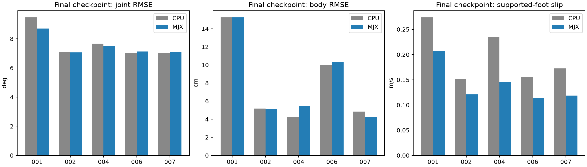
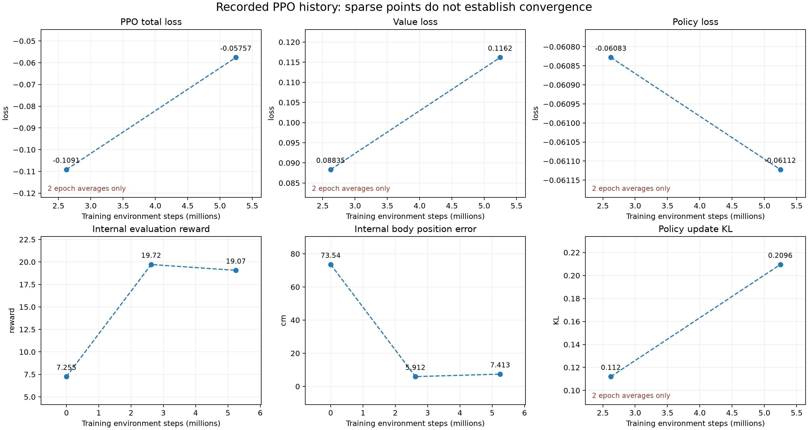
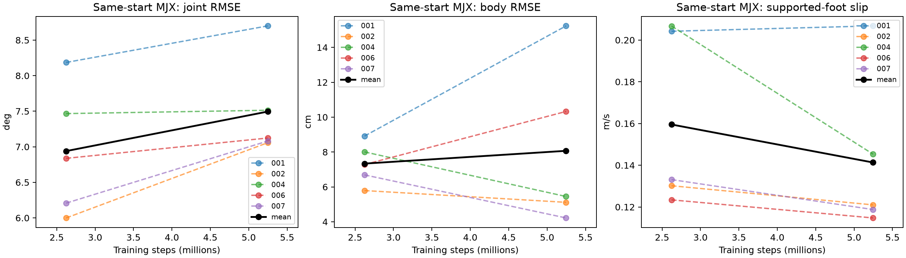
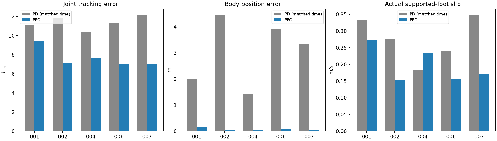
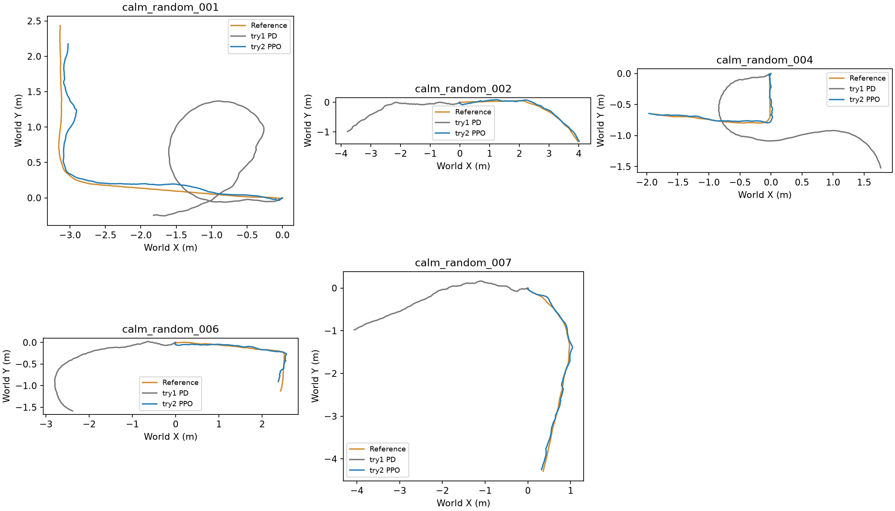

2026년 10월 29일 · 30Hz·발 고정 보정 없음 · try1 PD와 비교
학습했던 MJX에서도 생존 5/5, 오차 선별 0/5다. CPU로 옮겨 평가한 것만으로 현재 추종 오차가 생긴 것은 아니다. 중간보다 최종 모델의 평균 관절·위치 오차가 증가했고, 미끄러짐은 감소했다. 현재 자료로 수렴 여부를 확정할 수 없으며, 단순히 학습량만 늘리면 좋아진다는 근거도 부족하다.
기존 중간·최종 체크포인트를 재학습 없이 평가했다. 저장된 MJX 환경과 모델·보상 설정을 불러와 30Hz 제어, 300Hz 물리 계산, solver 반복 5회, 동일한 5개 모션·seed 0을 사용했다. CPU 평가와 같은 첫 레퍼런스 자세·차분 초기 속도·행동 이력 및 관측 잡음 키 순서를 맞췄다. 학습 때의 임의 프레임 시작과 달리, 모든 모션을 첫 프레임부터 10초 평가했다. 자동 초기화는 없으며 전도 시 지표를 잘랐다.
접지 미끄러짐은 MJX가 계산한 실제 접촉 힘과 접촉점 속도로 측정했다. 측정을 위해 실제 실행 중인 로봇의 자세를 강제로 보정하지 않았다. 기존 CPU 기본 solver와 달리 MJX의 학습 설정을 유지했으므로, CPU–MJX 차이는 물리 엔진과 설정 차이를 함께 포함한다.
| 평가 | 10초 생존 | 관절 RMSE(°) | 몸통 위치 RMSE(cm) | 몸체 기준 발 오차(cm) | 자세 오차(°) | 접지 미끄러짐(m/s) | 오차 선별 |
|---|---|---|---|---|---|---|---|
| 최종 CPU | 5/5 | 7.66 | 7.91 | 3.94 | 5.23 | 0.198 | 0/5 |
| 중간 MJX (262만) | 5/5 | 6.94 | 7.34 | 3.80 | 4.93 | 0.160 | 0/5 |
| 최종 MJX (525만) | 5/5 | 7.49 | 8.07 | 3.87 | 5.17 | 0.141 | 0/5 |
수치는 5개 모션별 지표의 단순 평균이다. CPU와 MJX의 오차 수준은 비슷하지만 접촉·미끄러짐 수치에는 차이가 있다. MJX에서 평가해도 관절 5°·발 3cm·자세 5°의 세 조건을 함께 만족한 모션은 없다.

현재는 수렴 판정에 필요한 기록이 부족하다. loss는 개별 업데이트의 연속 기록이 아니라 약 262만 스텝씩 묶은 구간 평균 두 개뿐이고, 내부 평가는 초기·중간·최종의 세 점이다. 점 사이의 점선은 위치를 연결한 안내선이며 실제 중간 변동을 측정한 곡선이 아니다. 측정되지 않은 구간을 보간하거나 부드럽게 만들지 않았다.

PPO의 전체 loss는 정책·가치 예측·탐색을 위한 엔트로피 항의 합이다. 정책이 바뀌면 학습에 쓰는 경험과 목표값도 바뀌므로, 전체 loss의 부호나 단조 감소만으로 제어 성능의 수렴을 판단하지 않는다. 보상·실제 추종 오차·생존·미끄러짐을 함께 보아야 한다.

학습량이 약 두 배가 되는 동안 평균 관절 오차는 6.94→7.49°, 위치 오차는 7.34→8.07cm로 증가했고, 미끄러짐은 0.160→0.141m/s로 감소했다. 일부 지표의 개선과 다른 지표의 악화가 함께 있어, 모든 목표가 계속 개선 중이라고 할 수 없다. 한 seed와 두 체크포인트이므로 최적점을 지났는지, 학습 변동인지, 보상의 절충인지도 확정하지 않는다.
추가 학습을 시험할 가치는 있지만, 현재 설정 그대로 오래 연장하는 것보다 짧은 검증 구간에서 변화 과정을 더 자주 기록하는 것이 먼저다. 다음 연장 시험에서는 설정을 유지한 채 약 10만~25만 스텝 간격의 loss 구간 평균과 고정된 5개 전체 모션 MJX 평가를 기록한다. 같은 구간에서 실제 오차와 보상이 함께 개선되는지 확인하고, 보상 상승에도 추종 오차가 줄지 않으면 보상·레퍼런스의 절충을 별도 실험으로 검토한다. 이번에는 추가 학습을 실행하지 않았으며 기존 체크포인트의 평가와 기록 분석만 수행했다.
주황 A1 전체 외형, 보라 TT 목표, 파랑 MJX 실제 기록을 공통 장면에서 보여준다. 가려짐 방지용 일정한 표시 간격만 적용했으며 영상 주소는 절대 경로다.
PPO의 10초 생존은 5/5, 생존과 세 가지 오차 선별을 함께 만족한 모션은 0/5다. try1 PD는 생존 5/5, 같은 오차 선별 통과 0/5였다. 같은 실행 길이로 비교하면 PPO의 관절 오차가 낮아진 모션은 5/5, 몸통 위치 오차는 5/5, 접지 미끄러짐은 4/5다. 모션별 성공 여부와 생존·정확도·미끄러짐을 함께 보아야 한다.
아래 값은 모션별 지표를 동일 가중치로 평균한 값이다. 두 제어기 모두 모든 모션을 10초 수행했으므로 전체 평가 시간도 같다. 한 seed의 관찰 결과이며 통계적 유의성을 뜻하지 않는다.
| 지표 | try1 PD | try2 PPO | 평균값 감소율 |
|---|---|---|---|
| 관절 RMSE | 11.359 ° | 7.661 ° | 32.6% |
| 몸통 위치 RMSE | 302.713 cm | 7.912 cm | 97.4% |
| 몸체 기준 발 평균 오차 | 6.054 cm | 3.938 cm | 35.0% |
| 자세 평균 오차 | 66.884 ° | 5.232 ° | 92.2% |
| 실제 접지 미끄러짐 | 0.277 m/s | 0.198 m/s | 28.6% |
해석: PPO는 목표 경로에서 크게 벗어나던 PD 기준 실험보다 몸통 경로와 방향을 잘 유지했다. 그러나 모든 모션의 관절 RMSE가 5°를 넘고 몸체 기준 발 평균 오차도 3cm를 넘어, 세부 움직임의 정확도는 아직 기준에 미달한다. 미끄러짐은 평균적으로 감소했지만 004에서는 PD보다 증가했다. 경로 개선이 미끄러짐 없는 동작까지 보장하지는 않는다.
중간 모델에서 최종 모델로 갈 때 모든 모션이 일관되게 개선되지 않았다. 예를 들어 001의 몸통 위치 RMSE는 중간 약 7.93cm에서 최종 약 15.24cm로 증가했다. 따라서 추가 학습량만으로 정확도가 계속 좋아진다고 단정할 수 없다.
계산 단계의 레퍼런스 선별 통과가 실제 추종을 보장하지 않았으므로, 현재 상태와 앞으로의 목표 움직임을 관측하는 PPO 정책으로 추종 성능이 개선되는지 확인했다. try1은 목표 관절각을 그대로 PD 제어기에 넣었고, try2는 PPO가 관절 목표를 선택하며 같은 PD 구동기가 힘을 낸다. 모션마다 정책을 따로 학습하지 않고 5개를 공유하는 정책 하나를 처음부터 학습했다.
학습 요청 예산 5,242,880 환경 스텝, 실제 저장 체크포인트 5,246,976 스텝, seed 0. 병렬 환경 32개, 기준 클립을 임의 시점에서 시작하는 학습 초기화, 외력 교란 없음, 초기 관절 자세·속도 추가 잡음 없음. 관측에는 기존 환경의 작은 잡음을 유지했다. 네트워크와 보상은 기존 추종 PPO 설정을 재사용했다. 마지막 예산 체크포인트를 고정 사용했으며 비교 평가로 체크포인트를 선별하지 않았다.
학습은 MJX GPU, 최종 비교 평가는 try1과 같은 MuJoCo CPU에서 결정론적 정책으로 수행했다. 모델과 레퍼런스는 TT e000/00000011, 치수 중간값 13개, 동일한 30Hz 데이터다. 두 평가 모두 300Hz 물리 계산·30Hz 제어, 자기 충돌 끔·바닥 충돌 유지, KP 30·KD 0.5, 관절 토크 한계 33.5N·m를 사용했다. 첫 레퍼런스 자세와 같은 차분 초기 속도에서 시작하고, 외력·높이 보정·중간 초기화 없이 최대 10초 실행했다. 다만 MJX에서 학습한 정책을 CPU 물리 환경에서 평가하므로 학습 환경 내 평가와 구분해야 한다.
| 학습 스텝 | 평균 보상 | 평균 평가 구간(스텝) |
|---|---|---|
| 0 | 7.26 | 226.8 |
| 2,623,488 | 19.72 | 250.0 |
| 5,246,976 | 19.07 | 252.0 |
내부 평가는 임의 시작 상태에서 수행하며 평균 평가 길이는 전도뿐 아니라 클립 끝에서도 짧아질 수 있다. 아래 첫 프레임부터의 CPU 비교 평가와 구분한다. 보상만으로 성공을 판정하지 않는다.
몸통 위쪽 축의 수직 성분이 0.5 미만이면 전도이며 30Hz 경계에서 검사했다. 관절 전체 RMSE 5° 미만, 몸체 기준 발 평균 오차 3cm 미만, 자세 평균 오차 5° 미만을 참고 오차 선별로 사용했다. 기존 전체 평가와 동일한 판정은 아니며, 미끄러짐은 합격 기준 없이 실제 수치를 보고한다. 접지는 레퍼런스 표시가 아니라 0.001N 이상 힘을 받는 실제 발–바닥 접촉으로 측정했고, 접촉점의 수평 속도를 미끄러짐으로 계산했다. 몸체 기준 발 오차는 몸통의 이동·방향 이탈을 제거하고 몸통에 대한 네 발의 상대 위치를 비교한 값이다.
2,623,488 스텝 체크포인트에서도 동일한 5개 모션을 평가했다. 생존 5/5, 몸통 위치 RMSE 5.60~7.93cm, 관절 RMSE 5.85~8.24°였다. 이 결과로 최종 체크포인트를 바꾸지 않았으며 아래 비교는 예정한 전체 예산 완료 모델을 사용한다.
각 행은 전도 또는 10초 종료까지의 평가다. 일찍 전도한 결과의 작은 오차가 완주보다 우수하다는 뜻은 아니다.
| 모션 | 제어 | 평가(s) | 생존 | 관절 RMSE(°) | 몸통 위치 RMSE(m) | 몸체 기준 발 오차(cm) | 자세 오차(°) | 접지 미끄러짐(m/s) |
|---|---|---|---|---|---|---|---|---|
| calm_random_001 | try1 PD | 10.00 | 완주 | 11.12 | 1.996 | 5.90 | 63.21 | 0.334 |
| calm_random_001 | try2 PPO | 10.00 | 완주 | 9.46 | 0.152 | 4.89 | 7.77 | 0.274 |
| calm_random_002 | try1 PD | 10.00 | 완주 | 11.83 | 4.458 | 6.47 | 31.65 | 0.276 |
| calm_random_002 | try2 PPO | 10.00 | 완주 | 7.11 | 0.052 | 3.67 | 4.09 | 0.152 |
| calm_random_004 | try1 PD | 10.00 | 완주 | 10.35 | 1.432 | 5.28 | 105.13 | 0.183 |
| calm_random_004 | try2 PPO | 10.00 | 완주 | 7.67 | 0.043 | 3.98 | 4.49 | 0.235 |
| calm_random_006 | try1 PD | 10.00 | 완주 | 11.30 | 3.915 | 5.87 | 47.40 | 0.242 |
| calm_random_006 | try2 PPO | 10.00 | 완주 | 7.03 | 0.100 | 3.54 | 5.61 | 0.155 |
| calm_random_007 | try1 PD | 10.00 | 완주 | 12.20 | 3.335 | 6.75 | 87.04 | 0.349 |
| calm_random_007 | try2 PPO | 10.00 | 완주 | 7.04 | 0.048 | 3.61 | 4.20 | 0.172 |
PPO가 전도한 경우 PD 데이터도 같은 시점까지만 잘라 비교했다. 아래 그래프와 개선 모션 수는 이 공통 구간을 사용한다. 전체 수치는 각자의 실행 길이로 집계한 위 표와 구분한다.

궤적 그래프에서 주황은 목표, 회색은 try1 PD, 파랑은 try2 PPO다.

하나의 바닥과 공통 카메라 안에 주황 A1 원본, 보라 TT 목표, 파랑 TT 실제 기록이 함께 있다. A1은 원본 CALM URDF의 전체 외형 메시(몸통·힙·허벅지·종아리)를 사용하며 충돌 형상은 숨겼다. 세 모델이 겹쳐 가려지지 않도록 인접 모델 사이에 약 1.15m의 일정한 표시용 간격을 두었다. 이 간격 외에 각 모델의 원래 동작·방향·이동 궤적은 변경하지 않았으며 카메라는 세 몸통을 함께 따라간다. 실제 추종 오차는 표시 간격을 적용하기 전 기록으로 계산한 값이다. 이 영상은 저장된 상태를 한 장면에 재생한 것으로 세 로봇이 서로 충돌하는 새 물리 실험은 아니다. 학습·물리 실행·측정값은 변경하지 않았으며 모든 영상 주소는 file:/// 절대 경로다.
try1 PD
/home/cgr-ugrad-2026/quad_ws/codesign/runs/calm_pilot_tracking/try1/shared_scene_videos/calm_random_001.mp4try2 PPO
/home/cgr-ugrad-2026/quad_ws/codesign/runs/calm_pilot_tracking/try2/evaluation/shared_scene_videos/calm_random_001.mp4try1 PD
/home/cgr-ugrad-2026/quad_ws/codesign/runs/calm_pilot_tracking/try1/shared_scene_videos/calm_random_002.mp4try2 PPO
/home/cgr-ugrad-2026/quad_ws/codesign/runs/calm_pilot_tracking/try2/evaluation/shared_scene_videos/calm_random_002.mp4try1 PD
/home/cgr-ugrad-2026/quad_ws/codesign/runs/calm_pilot_tracking/try1/shared_scene_videos/calm_random_004.mp4try2 PPO
/home/cgr-ugrad-2026/quad_ws/codesign/runs/calm_pilot_tracking/try2/evaluation/shared_scene_videos/calm_random_004.mp4try1 PD
/home/cgr-ugrad-2026/quad_ws/codesign/runs/calm_pilot_tracking/try1/shared_scene_videos/calm_random_006.mp4try2 PPO
/home/cgr-ugrad-2026/quad_ws/codesign/runs/calm_pilot_tracking/try2/evaluation/shared_scene_videos/calm_random_006.mp4try1 PD
/home/cgr-ugrad-2026/quad_ws/codesign/runs/calm_pilot_tracking/try1/shared_scene_videos/calm_random_007.mp4try2 PPO
/home/cgr-ugrad-2026/quad_ws/codesign/runs/calm_pilot_tracking/try2/evaluation/shared_scene_videos/calm_random_007.mp4이 결과는 한 seed·고정 학습 예산과 학습에 사용한 5개 모션에 대한 평가다. 미학습 모션·다른 형상·초기 상태 변화에 대한 일반화 증거가 아니다. 성능 미달은 현재 예산과 설정에서 기준을 만족하지 못했다는 뜻이며 PPO로 학습 불가능하다는 뜻은 아니다. 학습 보상 증가를 실제 경로 추종 성공으로 대체하지 않는다. 다음 실험에서는 부족한 지표와 모션을 먼저 확인하고 학습량·보상·초기화·물리 엔진 간 차이를 한 번에 하나씩 비교해야 한다.